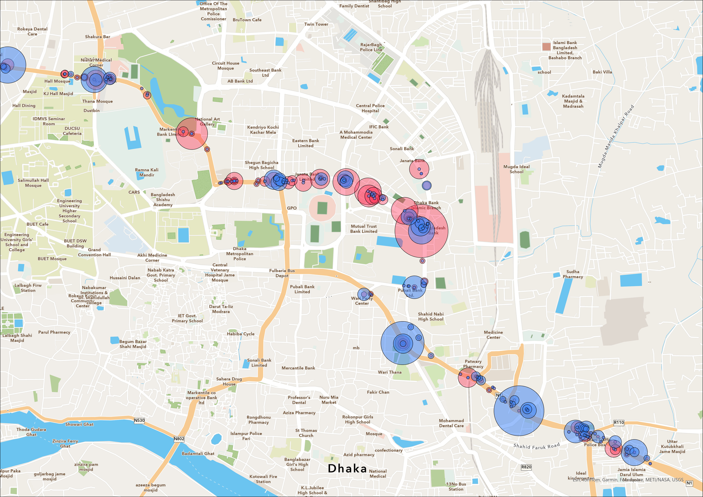

Background
TransitWand is a mobile based app for surveying public transit systems. It can record the geolocations of embarking and disembarking passengers and export data in shapefiles (file format that supports geospatial data analysis). Making it a far superior surveying tool than any paper-based method. This is brief review of the app and its usage benefits.
I was super grateful that I got introduced to this app from the wonderful individuals from itp (Integrated Transport Planning). I was working as a Junior Engineer for DTCA (Dhaka Transport Coordination Authority) on a project related to Dhaka’s public transit. We had plans to do paper-based Boarding Alighting surveys. By good fortune I got a demonstration on how itp collected their data with their app.
I eventually got to test the app out by running it on my own mobile device. Unfortunately though, data collected by the app couldn’t be accessed from the devices locally. Only their dedicated server allowed data to be exported. Thankfully itp agreed upon sharing the access to their server.
The Benefits
Typically boarding alighting surveys are done on pen and papers. The names of the stoppages are tabulated beforehand. Surveyors populate the sheets by riding the transit line and filling up necessary data for each stoppage. However, this poses a severe issue. What if passengers are not taking the bus from a designated location? How do you fill up the form in that case? The data has to be collected for a proxy stoppage, or a new entry has to be made on the survey sheet. Creating new entries onsite in the chaotic environment is a surefire way of making misjudgments. And even if the surveyor avoids any errors, the location cannot be precise as there are no coordinates being recorded. In the end we have to work with possibly skewed data.

The issue is even more prevalent in a third world country like Bangladesh, where properly functioning transit stops barely exist. People access the bus from anywhere that suits them. The app totally obviates the data collection issue by capturing GPS coordinates of engaging passengers. This implementation creates the opportunity for spatial data analysis.


Other benefits include recording the path taken by the transit, which serves as a verification survey as well. Time stamps are also recorded for each action. This is quite literally 3 surveys in one. A paper-based method would’ve required 2 surveyors at least, preferably 3, but we would still be unable to acquire proper geospatial data.
I couldn’t find many documentations about the app on the internet. It seems that the app was publicly available on Google Play store. Unfortunately, it’s not anymore. Which is why it was quite fortuitous that I could implement it for some of our surveys.
See some of my analysis of our collected data here.